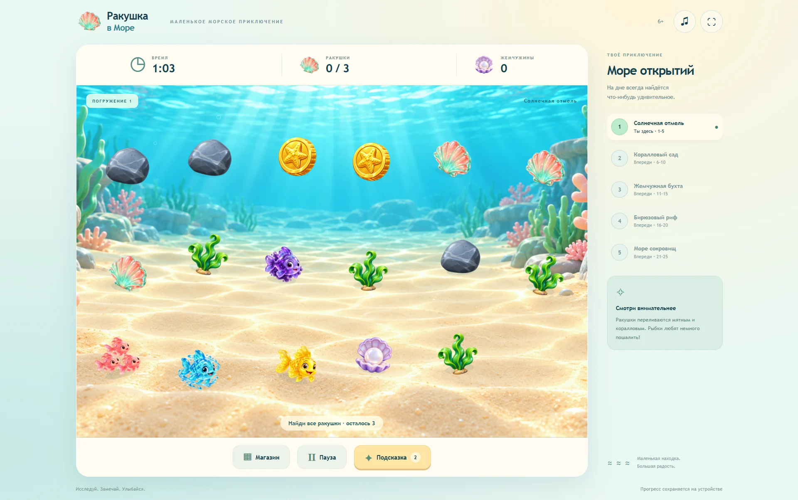

РАКУШКА В МОРЕ
Казуальная игра, в которой первая цель понятна с одного взгляда.

Задача
Дать игроку короткое морское приключение: найти ракушки, получить жемчужины и открыть новые возможности. Основной сценарий должен помещаться на одном экране и работать на телефоне.
Мой вклад
Визуальный язык, композиция, цветовая иерархия, путь игрока и системная логика прогрессии. Код собирался с помощью AI-инструментов по заданным сценариям и структуре.
Путь игрока
- Увидеть первую цель: найти ракушки.
- Нажать на объект и сразу получить обратную связь.
- Завершить сессию и увидеть результат.
- Использовать награду для следующего погружения.
Решения
Единый HUD удерживает время, цель и награду в одном месте. Крупные кнопки помогают на мобильном экране. Мятные, коралловые и золотистые объекты отделяются от приглушённого морского фона.
Разнообразие создают изменения игрового поля и улучшения. Они продолжают основной сценарий, не заставляя игрока изучать новую структуру меню.
Вывод
Ценность этого проекта для меня: научиться держать интерфейс простым, когда в игре появляется больше правил. Следующая проверка: наблюдение за первыми сессиями и понятностью обратной связи при промахе.
Экраны и детали
Материалы проекта: интерфейс, визуальные состояния и атмосфера.
